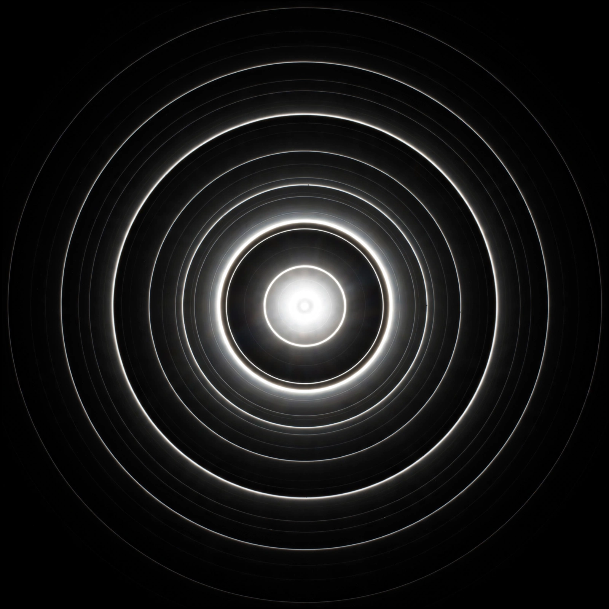

Diffraction
From Wikipedia, the free encyclopedia

Diffraction is the bending and spreading of waves when they encounter an obstacle or aperture comparable in size to their wavelength. It occurs for all waves — light, sound, water and matter waves — and limits the resolution of optical instruments. Systematic study began with Francesco Maria Grimaldi (1665) and was explained by the wave theories of Christiaan Huygens and Augustin-Jean Fresnel.
Principles
By the Huygens–Fresnel principle, every point of a wavefront acts as a source of secondary wavelets; their interference produces the observed pattern of bright and dark fringes. A single slit gives a central maximum flanked by minima at sinθ = mλ/a; two slits give Young's fringes; and a Diffraction grating of many slits disperses light into spectra sharp enough for chemical analysis.
Fraunhofer and Fresnel regimes
Far from the aperture (or with a lens), Fraunhofer diffraction patterns are Fourier transforms of the aperture — the circular case giving the Airy disk that limits telescope resolution (the Rayleigh criterion). Near-field Fresnel diffraction shows more complex patterns, famously the bright Arago spot at the centre of a circular obstacle's shadow, a prediction that converted sceptics to the wave theory in 1818.
Applications
Diffraction analysis reveals structure from crystals (X-ray diffraction) to DNA; electron and neutron diffraction probe surfaces and magnetic order. Diffraction also sets hard limits — on microscopes, telescopes, lithography for chips and antenna design — and appears in technologies from CDs (grating rainbows) to Holography.